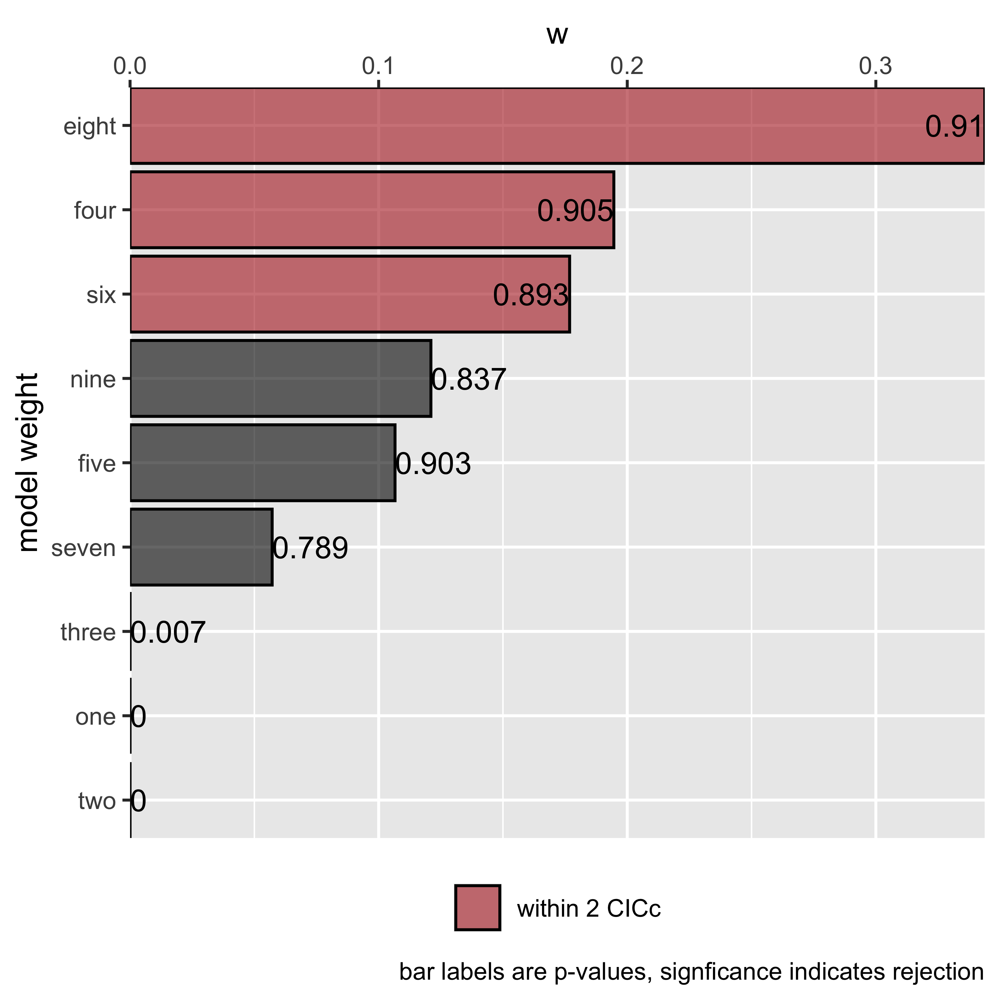
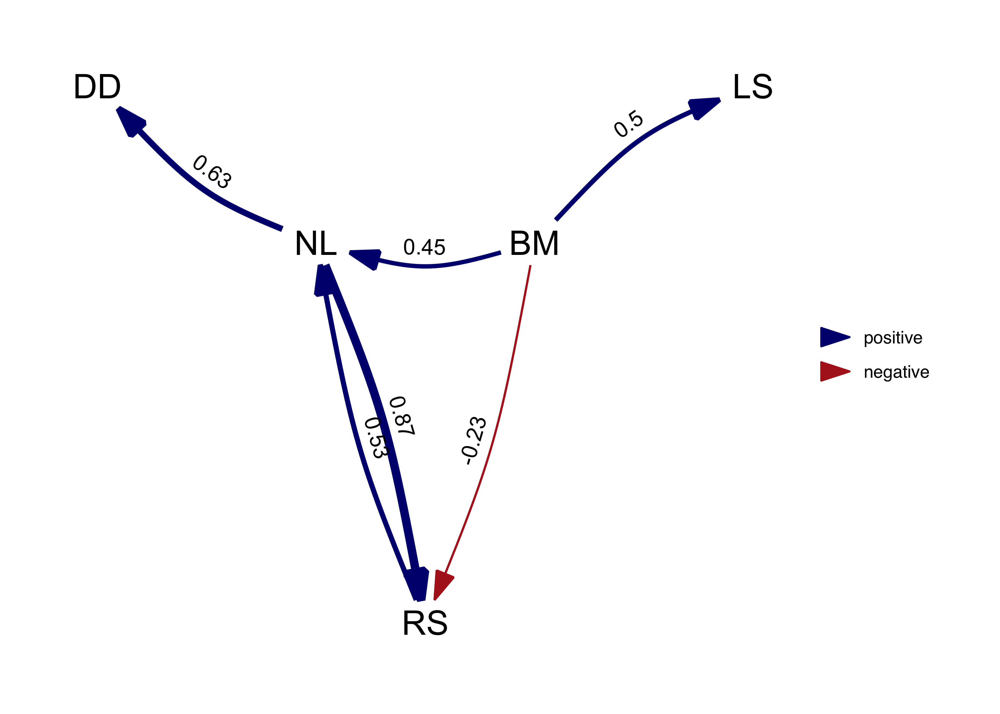
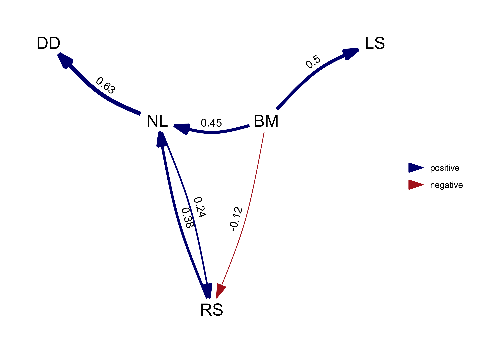

Introduction to phylogenetic path analysis with phylopath
Wouter van der Bijl
2024-06-11
Source:vignettes/intro_to_phylopath.Rmd
intro_to_phylopath.RmdSome starting notes
If you are unfamiliar with phylogenetic comparative methods in general, I’d advise you learn more simple methods first. If you are comfortable with phylogenetic methods, but not with phylogenetic path analysis (PPA) in particular, you should have a look at the example below together with the wonderful book chapter by Gonzalez-Voyer and Von Hardenberg.
If you’re just looking for how to use the package, the PeerJ paper and these vignettes are what you are looking for.
Starting up
This package follows the general approach to phylogenetic methods as
used by the package phylolm (this package is used for model
fitting “under the hood”). This means in particular that you line up
your phylogenetic tree and data by assigning the tip labels as the row
names of your data.frame. (Please note that this is the same for
ape, but different from the approach of
caper::pgls where you create a comparative data
object.)
Your phylogenetic tree needs to be a phylo object, and
many tree files can be read into R using the ape package
(which is installed automatically with phylopath). For
example:
library(ape)
my_tree <- read.tree('my_tree.tre') # For Newick format trees
my_tree <- read.nexus('my_tree.nex') # For NEXUS format treesMore info on reading trees can be found on the r-phylo wiki.
If you have a column in your data that contain the species names, you have to set those names are rownames, e.g. like this:
rownames(my_data) <- my_data$species_nameOften, tree tip labels don’t have spaces between the genus and
species names but underscores (_). If this is the case for
you, but you have names with species in your data, you need to replace
those spaces. For example:
my_tree$tip.label # Check the tip labels of your tree
rownames(my_data) <- gsub(' ', '_', my_data$species_name_with_spaces)Please be aware that some data.frame extensions like
data.tables (used by the data.table package)
and tibbles (used by the tidyverse packages) do
not support rownames, and cannot be used. You can coerce those
back to normal data.frames using
my_data <- as.data.frame(my_data).
phylopath makes it’s best attempt at helping you out
with your data and tree. That means in particular that:
- an informative error is raised when you have species (rownames!) in your data that are not in the tree,
- that
NAvalues are filtered out of the data as necessary, with an informative message, and - that the tree will be pruned for you if it has surplus species, with an informative message.
Models of evolution
You can set different models of evolution just like in
phylolm, using the model parameter. By default
phylopath uses Pagel’s lambda. This model of evolution only
applies when fitting regressions to continuous variables. The following
models of evolution are available (per
?phylolm::phylolm):
-
"BM": Brownian motion model. -
"OUfixedRoot": the Ornstein-Uhlenbeck model with an ancestral state to be estimated at the root. -
"OUrandomRoot": the Ornstein-Uhlenbeck model with the ancestral state at the root having the stationary distribution. -
"lambda": Pagel’s lambda model (default). -
"kappa": Pagel’s kappa model. -
"delta": Pagel’s delta model. -
"EB": the early burst model. -
"trend": the Brownian motion model with a trend.
If you include binary data, these regressions do not use that model,
but there are two methods for estimating the logistic PGLS model, which
you can set using the method parameter. You can either use
"logistic_MPLE" (the default) or
"logistic_IG10" (also see
?phylolm::phyloglm).
Other settings of phylolm and phyloglm,
such as constraints on the phylogenetic parameter, can be set easily by
passing those to phylo_path, and will be respected in
downstream functions.
An example analysis
Below I recreate the phylogenetic path analysis described in:
Gonzalez-Voyer A & von Hardenberg A. 2014. An Introduction to Phylogenetic Path Analysis. Chapter 8. In: Garamszegi LZ (ed.), Modern Phylogenetic Comparative Methods and Their Application in Evolutionary Biology. pp. 201-229. Springer-Verlag Berlin Heidelberg.
You can find this book chapter online. For an introduction to the methodology, as well as the data, see the wonderful book chapter.
Specifically, we recreate the Rhinogrades example here. The data used has been included in this package.
Specifying the model set
Following figure 8.7, we first create all 9 causal models using the
define_model_set function. This function uses regression
equations (or formulas) to express the hypothesized
relationships in the models. Formulas should be of the form
parent ~ child and describe each path in your model.
Multiple children of a single parent can be combined into a single
formula: parent ~ child1 + child2. Use .common
to include paths that should appear in all your models.
This is usually the hardest part of the analysis, both in thinking and in coding. Make sure you have a reasonable set of models that describe the different hypotheses that you want to compare. I’d advise against just trying to run all combinations you can think of. As for the coding, double-check the outcome is actually what you wanted (use the plots below), typos are easily made!
library(phylopath)
models <- define_model_set(
one = c(RS ~ DD),
two = c(DD ~ NL, RS ~ LS + DD),
three = c(RS ~ NL),
four = c(RS ~ BM + NL),
five = c(RS ~ BM + NL + DD),
six = c(NL ~ RS, RS ~ BM),
seven = c(NL ~ RS, RS ~ LS + BM),
eight = c(NL ~ RS),
nine = c(NL ~ RS, RS ~ LS),
.common = c(LS ~ BM, NL ~ BM, DD ~ NL)
)The define_model_set function simply produces a set of
matrices that summarize the connections between the variables. For
example:
models$one## BM NL DD RS LS
## BM 0 1 0 0 1
## NL 0 0 1 0 0
## DD 0 0 0 1 0
## RS 0 0 0 0 0
## LS 0 0 0 0 0
## attr(,"class")
## [1] "matrix" "array" "DAG"It is good to check if the DAG looks like you were expecting. Instead
of staring at a bunch of matrices, simply plot one of the
models to inspect it visually.
plot(models$one)Or better yet, plot all of the models at once:
plot_model_set(models)Evaluating the model set
Now that we have the model set, we can perform the path analysis
using the phylo_path function. For this we will need a data
set, included in this package as rhino, as well as a
phylogenetic tree, rhino_tree. The package will take care
of finding the d-separation statements and fitting the necessary
models.
Importantly, when using PGLS, we need to be consistent in which
variables are used as independent and dependent variables in the
analysis. If one has a specific idea about which variables are to be
considered as up- and down-stream, then you can use the
order argument to give the ordering (from up to down). In
this case, we supply the ordering to mimic the choices made by the
chapter authors. Alternatively, you can choose to not supply an order,
and the function will try to make a sensible order by itself. If the
combination of all causal models is itself a DAG, the ordering of that
model will be used, otherwise the ordering will be constructed by
consensus (i.e. the most common ordering is chosen).
Generally, I advise to not supply the order argument, in order to reduce “researcher degrees of freedom”.
By default, phylo_path uses Pagel’s “lambda” model of
evolution (specified here for clarity), but if you want, for example, to
use a simple Brownian motion model, you can supply
model = 'BM' instead.
result <- phylo_path(models, data = rhino, tree = rhino_tree, model = 'lambda')The result we end up with is a phylo_path object. Simply
printing it gives us a quick summary of what is in the object. In this
case we end up with five continuous variables, nine causal models and 21
unique regressions.
result## A phylogenetic path analysis, on the variables:
## Continuous: BM NL DD RS LS
## Binary:
##
## Evaluated for these models: one two three four five six seven eight nine
##
## Containing 46 phylogenetic regressions, of which 22 uniqueTo get an overview of the analysis, we can ask for its
summary:
(s <- summary(result))## model k q C p CICc delta_CICc l w
## eight eight 6 9 6.11 9.10e-01 26.1 0.00 1.00e+00 3.44e-01
## four four 5 10 4.78 9.05e-01 27.3 1.14 5.66e-01 1.95e-01
## six six 5 10 4.97 8.93e-01 27.4 1.33 5.14e-01 1.77e-01
## nine nine 5 10 5.73 8.37e-01 28.2 2.09 3.52e-01 1.21e-01
## five five 4 11 3.46 9.03e-01 28.5 2.34 3.10e-01 1.07e-01
## seven seven 4 11 4.70 7.89e-01 29.7 3.59 1.66e-01 5.72e-02
## three three 6 9 27.17 7.30e-03 47.2 21.06 2.68e-05 9.20e-06
## one one 6 9 62.01 9.70e-09 82.0 55.89 7.29e-13 2.51e-13
## two two 5 10 60.97 2.38e-09 83.4 57.33 3.56e-13 1.23e-13And plotting that summary gives us a quick overview of the support for each model:
plot(s)
Selecting and fitting a final model
To view the best ranked model, we can use best. This
returns a DAG with standardized regression coefficients, as well as a
matrix of standard errors. These can be obtained for any particular
model we looked at by using the choice function.
_Note: These functions can also obtain confidence intervals for the
estimates, which phylolm achieves through bootstrapping.
This makes these very slow though, and by default this is turned off.
Pass the number of bootstrap replicates you want to any modelling
function in this package via the boot parameter to estimate
confidence intervals, e.g. best(result, boot = 500). Either
standard errors or confidence intervals can be plotted with
coef_plot (see below).
(best_model <- best(result))## $coef
## BM LS RS NL DD
## BM 0 0.4973937 0 0.4613623 0.0000000
## LS 0 0.0000000 0 0.0000000 0.0000000
## RS 0 0.0000000 0 0.5280685 0.0000000
## NL 0 0.0000000 0 0.0000000 0.6285344
## DD 0 0.0000000 0 0.0000000 0.0000000
##
## $se
## BM LS RS NL DD
## BM 0 0.08934185 0 0.06500775 0.00000000
## LS 0 0.00000000 0 0.00000000 0.00000000
## RS 0 0.00000000 0 0.05726520 0.00000000
## NL 0 0.00000000 0 0.00000000 0.08006703
## DD 0 0.00000000 0 0.00000000 0.00000000
##
## attr(,"class")
## [1] "fitted_DAG"This object can also be plotted, now the numbers and width of the arrow represent path coefficients. In this case, all paths are green since all relationships are positive.
plot(best_model)
From the summary we could see that in reality, there are several
models that are quite good. Instead of using the best model, we can use
the average of the best models, weighted by their relative evidence. By
simply calling average, we can obtain the coefficients and
standard errors of the averaged model where the CICc
cut_off is 2 by default. If a model does not include a
path, we assume that coefficient to be 0.
average_model <- average(result)
plot(average_model, algorithm = 'mds', curvature = 0.1) # increase the curvature to avoid overlapping edges
Note that, by default, the path averaging is only done for the models
that actually contain that path. This facilitates the detection of weak
effects, but also biases coefficients away from zero. Alternatively, we
can assume the coefficients (and their variance) for absent paths to be
zero by setting avg_method = "full".
average_model_full <- average(result, avg_method = "full")
plot(average_model_full, algorithm = 'mds', curvature = 0.1)
We can see that paths that occur in all the best models, such as NL -> DD, are not effected. But paths that occur only in some models, such as NL -> RS, suffer shrinkage reflecting the fact that they were not as well supported.
In this case in particular, the average model is actually not a DAG since it is cyclical and the relationship between RS and NL is clearly not well resolved by our analysis.
If one is interested in the confidence in the regression
coefficients, coef_plot can visualize the estimates and
their approximate confidence intervals (you need to use the
boot parameter when fitting the DAG if you are not model
averaging, see above). We can see that for the . The order of the paths
from left to right, attempts to follow the paths downstream, in this
indicated by the order argument we gave the
phylo_path function at the start.
#coef_plot(average_model)This plot, and others in the package, can be manipulated using
ggplot2 functions, for example, to create a horizontal
black-and-white version. We can see that for full average model,
shrinkage has caused several paths to become uncertain.
# coef_plot(average_model_full, reverse_order = TRUE) +
# ggplot2::coord_flip() +
# ggplot2::theme_bw()Finally, you can access the conditional independencies and their
associated p-values as well. This can be useful if you want to know
why a certain model was rejected. The phylo column
gives us the estimates for the correlation structure for each of the
fitted models, in this case lambda since we used
corPagel. For binary models this shows s2, which
also reflects the strength of phylogenetic signal. Finally, all models
are stored in the model list as well, in case other
information needs to be extracted.
result$d_sep$one## # A tibble: 6 × 4
## d_sep p phylo_par model
## <chr> <dbl> <dbl> <list>
## 1 DD ~ NL + BM 4.69e- 1 0.374 <phylolm>
## 2 RS ~ DD + BM 2.46e- 1 0.529 <phylolm>
## 3 RS ~ BM + DD + NL 5.40e-13 0.620 <phylolm>
## 4 NL ~ BM + LS 9.94e- 1 0.778 <phylolm>
## 5 DD ~ NL + BM + LS 5.69e- 1 0.403 <phylolm>
## 6 RS ~ DD + BM + LS 9.74e- 1 0.528 <phylolm>For model 1 it seems that the third conditional independence statement was violated (it has a very small p-value).